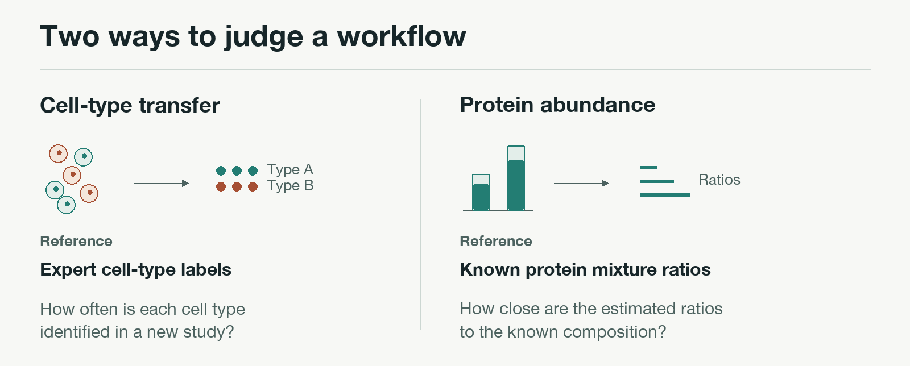

Choosing a workflow for a new dataset

Motivation
When a new dataset arrives, an analyst often starts with a workflow that worked on an earlier study. A new tissue, a different instrument, or rarer cell types can change which choices work well. We wanted to know when testing a few changes to a familiar workflow is worth the effort, given a fixed number of analyses we can run.
Prior work
The pipeComp framework made it possible to compare whole single-cell workflows and trace how the choice at one step affected later steps. Fang and colleagues then showed that the relative performance of pipelines can vary across datasets. We built on those findings by giving the search a concrete target for each dataset, such as recovering the cell labels in a new study.
What we delivered
We built a workflow selector that starts with a small collection of existing analyses, tests changes, and keeps track of their measured performance. We evaluated how well it transferred cell-type labels across studies and how closely it estimated the known protein ratios in prepared mixtures. The starting workflows were competitive. Further changes helped in some settings, and the gains depended on the dataset.